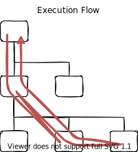
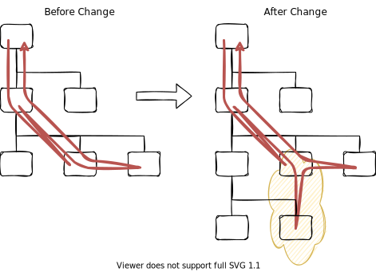
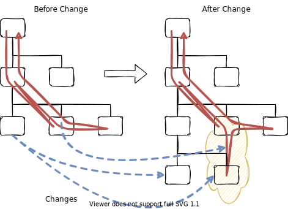

Teaching in the Third Dimension
I’ve been blogging recently about teaching tools I want, such as a memory diagram generator and a code annotator. Talking to people about them, and about an alternative history for computational notebooks, has reminded me that I’ve never actually explained why learning programming is much harder than actually programming.
Here’s the physical organization of a small program. The boxes can represent files in a directory structure or a class inheritance hierarchy; what matters is that a programmer who wants to work with this code must build a mental model of what’s where:
They must also build a mental model of what runs in what order:

If a programmer wants to add a feature or fix a bug, they need to have two models in their head at once along with the difference between them:

Keeping that straight is more difficult than remembering either model on its own, but what happens when we’re trying to teach or learn programming? In particular, what happens when we’re trying to explain the design of even a small program step by step?
I tried to draw an example for this blog post but couldn’t—not in two dimensions. The problem is the need for a third kind of connection that links changes to physical elements and execution paths. It’s just barely readable for a single small change:

but some programs in Software Design by Example evolve ten or eleven times. If I draw those changes side by side with the change connectors on top of the diagrams, the result is unreadable. The only solution I can think of is to use a third dimension:
-
spatial: stack the versions on top of each other like panes of glass so that the change connectors run vertically
-
temporal: animate the additions, deletions, and modifications so that the person trying to understand them only has to keep one or two in their head at a time
Both options would require more sophisticated tools and much (much) more time than most instructors have, but that’s not the point. The point is that no matter what we do, it’s harder to understand than everyday programming.
I’m trying to fix some data access code at work right now. I’ve been working on the problem for two days and have touched about two dozen files, but I only need to keep two mental models in my head at once. If I was teaching someone how this code had grown over time in response to new requirements, they and I would have to build half a dozen mental models one after another, and keep track of the connections between the newest one and its predecessor. We could probably dump parts of the older models as we formed the newer ones, but only parts, and “dumping” is the wrong metaphor here anyway. Our brains can’t discard information the way a computer can flush a cache, and the no-longer-relevant parts of old models would linger and interfere with the new models we’re trying to form. (“Wait, are we using callbacks or observers at this point?”)
We can try to minimize the need for third-dimensional thinking by presenting learners with finished, full-formed programs, but that only teaches “what”, not “why” or “how”:
-
“Why do we split the array at
mid-1instead ofmid?” To avoid an edge case that I haven’t shown you and that doesn’t cause problems if the code is written correctly right from the start. -
“How did you figure out why the split has to be
mid-1?” By testing an edge case that only fails with incorrect code, figuring out why it failed, and then figuring out where to make the necessary change.
All of which is to say, if programming is like playing chess, learning to program is like playing three-dimensional chess when there’s a cat in the room who occasionally jumps up on the board and knocks the pieces around. This is why I believe that having learners start with “real” tools like VSCode or Jupyter notebooks is misguided: they increase cognitive load by solving problems learners don’t have yet, but more importantly, they don’t even address the unique problems that teachers and learners have.
Tools to help people understand the evolution of code over time would be useful to working programmers as well, but twenty-five years after UML was standardized, it still doesn’t have a way to represent changes to programs. No other notation I’m familiar with can do this either; they all describe static snapshots of programs rather than the dynamic, evolving programs we all build, learn, and teach. Solving this is just one question among many, but speaking as a teacher, it’s one of the most important. If you’re working on it, or know someone who is, I’d be grateful for a pointer.